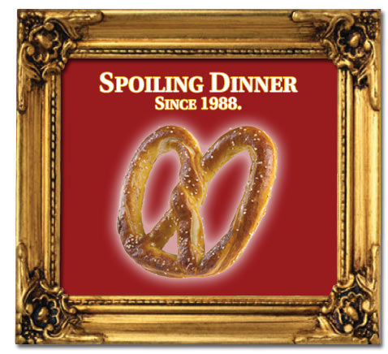

Responder a este comentário
Spoilers
por Giba Assis Brasil em 28 de julho de 2008Segundo o Dicionário Michaelis, "spoil" pode ser substantivo, significando espólio, presa de guerra, pilhagem, saque. Como verbo, "spoil" é saquear, pilhar, roubar, mas também estragar, frustrar. "A spoiled child" é uma criança mimada, uma má notícia pode "spoil my appetite". No plural, "spoils" são cargos, posições preenchidas por protegidos políticos - sim, existe uma palavra para isso em inglês! E existe inclusive um "spoil system", no sentido de distribuição gratuita (duvido que o Milton Friedman aprove o termo) de cargos e privilégios. "Spoiler" é aquele que estraga ou destrói. E "spoil-sport" é a ação repetida de quem vive "spoiling", conhecido como "desmancha-prazeres" em Portugal ou "mala-sem-alça" no Brasil.
Na internet, "spoiler" virou um desses termos que todo mundo percebe que veio do inglês mas ninguém sabe exatamente por quê, e que é usado sempre na língua original por um misto de reverência e preguiça - assim como "delete", "download", "newsletter", etc. Pensando bem, "et caetera" é latim, mas isso já é outra história.
Quando um site tem um banner ou mesmo um simples warning na sua homepage com a palavra "spoilers" (quase sempre assim, no plural, sei lá por quê), significa que estamos na presença de possíveis e indesejáveis revelações sobre o enredo de um filme (ou programa de TV, livro, peça de teatro, quadrinhos, qualquer coisa que tenha narrativa). E que, se você ainda não viu aquele filme ou etc, deve fugir dali como o ex-fumante foge da Souza Cruz, sob pena de ter seu prazer estragado, pilhado, espoliado.
E mais: dentro da nossa atual cultura do politicamente correto, o leitor teria o direito de ser avisado antecipadamente da ocorrência de spoilers em um texto crítico ou analítico; caso contrário, o dano causado (a impossibilidade de assistir ao filme sem conhecer o seu final) seria irreparável, o que poderia resultar num processo judicial. O crítico que escreve sobre "Titanic" e menciona o acidente, assim como o padre que comenta o Novo Testamento e revela o que acontece afinal com o protagonista, seriam, nessa óptica, tão criminosos quanto o laboratório que vendeu as pílulas anticoncepcionais de farinha, ou a empresa alimentícia que não colocou no rótulo o aviso de que seus biscoitos continham glúten.
Tradicionalmente, aceitava-se a existência de dois tipos de textos sobre filmes: as resenhas, curtas, informativas, que só contavam o que acontecia nos primeiros minutos; e as críticas, que por sua própria natureza terminavam revelando fatos do enredo, mesmo as viradas surpreendentes ou os finais inesperados. Não é que as críticas só pudessem ser lidas por quem já viu o filme, mas o leitor da crítica sempre soube onde estava se metendo, e não se preocupava muito com isso. Eu, por exemplo, quase nunca acho que esteja perdendo muito ao saber como um filme termina; e, se estiver perdendo, é porque o filme não vale grande coisa mesmo.
Mas, de umas décadas pra cá (e eu estou longe de ser o primeiro a falar nisso), a separação entre resenha e crítica se diluiu: algumas resenhas viraram resumos da história completa, do início ao fim; as "informações de bastidores" (inclusive o velho quem-comeu-quem) invadiram muitos textos pretensamente analíticos; e, cada vez mais, confunde-se crítica com achismo, análise aprofundada com quantidade de adjetivos, o ponto de vista do crítico com o sabor da bala azedinha que o acompanhou na sessão.
Como já não se sabe mais a diferença entre resenha e crítica, o público passou a fugir de ambas - quase sempre com razão, ainda que pelas razões erradas. E passou a sobrevalorizar informações que dizem tudo sem dizer nada, como uma classificação de gêneros crescentemente detalhada ("comédia romântica interracial pós-punk") ou um sistema de cotação mais ou menos sofisticado (das "três estrelinhas e um quinto" ao "bonequinho gostou tanto que nem saiu pra fazer xixi, apesar das três horas de projeção") ou ainda o velho argumento de autoridade, pra que o espectador saiba com quem está falando ("dos mesmos eletricistas de 'A Guerra dos mundos'"). Já é informação suficiente pra quem vai ver o filme, e muitas vezes não é muito menos do que o espectador tem ao sair do cinema.
Mas se eu for escrever sobre "Branca de Neve" e não conseguir evitar de mencionar os sete anões (afinal, uma virada na história, a grande contribuição dos roteiristas da Disney ao tradicional conto fixado por Perrault), tenho que avisar o incauto leitor: "Cuidado! Spoiler! Não leia na frente das crianças e, antes de prosseguir, desista da sua inocência."
Ou então a crítica não serve pra nada.

As rosquinhas Pretzel têm orgulho de espoliar o jantar do pessoal há 20 anos.
TEM MAIS:
A advogada Julie Hilden comenta as revelações de enredo do filme "Menina de ouro".
Um sítio chamado "The Movie Spoiler" se diverte em contar o final de todos os filmes em cartaz.
Ler crítica não é uma questão de concordar ou não com ela.